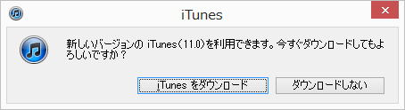

| TOP | weblog | TIPS | Works | リンク | 戻る |
| iPhone5 プチ情報 TIPSに乗せるほどではないプチ情報。 プチとはフランス語の「小さい」を意味します。Petit. (1)iOS6の電話帳には「グループ」機能はありません (2)「電話帳簡単コピー」アプリは簡単ではありません、問題ありです (3)2012年1215日より少し前にテザリング利用可能前にVerUPがある (4)ＭＭＳとＳＭＳ (5)2012年11月30日、iTunesがバージョンアップしました (1) iOS6の電話帳には「グループ」機能はありません、これは確かなようです。 以下はは調べ中のアイテムです、不正確な情報を含んでいるかもしれません。 電話帳のグループ機能の「代用」はアプリを使うかiCloudでフィールドを設けて同期をとる等の方法となります。 ですので、 iOS6の電話帳を直接参照するアプリでは「iCloud」を使う以外グループ機能を常に使うことは出来ないようです。 -戻る- (2) 電話帳簡単コピーは問題が多いようです。 Softbankのウェブサイトにも、何の理由もなく「「電話帳かんたんコピー」がご利用いただけないお客さまは、こちらをご利用ください。」とあります。 このソフトもっ曲者、GUIを見れば分かります、更に、ガラケーの人はPCと携帯を接続するUSBケーブルが必要です。 こちらでは２時間以上ほっておいてもアプリが動作したままでした。 中断したのですが幸い電話帳は全部コピー出来ていたようです。 正常終了した例も聞きましたがデータ件数とか関係なくサーバーが込み合っているのかアプリのバグなのかわかりませんが「問題あり」です。 (多分誰もいないと思いますが)新しくiPhone5を買う人はこの事実を店員に伝えて、できれば販売店でコピーしてもらいましょう。 -戻る- (3) 2012年11月30日時点では、iPhone5にはテザリングの設定は存在しません。 １２月１５日から「順次！」サービス開始ですので、その前にバージョンアップする事になりそうです。 auと同じ「設定」に「テザリング」の設定が増えるだけだとおもいます。 テザリング契約していない方のiPhone5はどうなるんでしょうかねぇ？ -戻る- (4) ＭＭＳ、ＳＭＳを覚える。 ＭＭＳ(Multimedia Messaging Service) いわゆる日本での携帯メールの事。 ＠softbank.ne.jp 等、いっけんインターネットドメインと勘違いしてしまうが違います。 発信はパソコンからでもできますが、受信はその携帯電話でしか出来ません。 MMSは携帯電話のトラフィックチャネルを使うのでSMSよりもバイトあたりの単価が高いかわりにサイズ制限は大幅に緩和されます。 絵文字、デコメ等、日本独特の文化が根付いており、Androidでもキャリア別の絵文字を利用できます。 iPhone5では「メッセージ」(最初から入っているアプリ)でしかMMSメールを受信・表示出来ません。（多分） ＳＭＳ(Short Message Service) SMSは電話番号宛に送信するメールです、ショートメールとか言います。 昔は同じ携帯会社間でしかやり取りできませんでしたが、今は相互でやりとりできます。 携帯電話のシグナリングチャネルを使っているので即時性が極めて高く比較的安価である一方送受信可能サイズの制限などがあります。 iPhone5のようにパケホーダイ携帯では料金が発生するSMSは、相手のメールアドレスがわからないときぐらいしか利用場面がない気がします。 ちなみに料金は受信料は無料、他社からの受信でも無料です。 送信料はソフトバンク同士でホワイトプラン、ゴールドプランは無料、その他のプランおよび他社への送信は３．１５円/通です。 -戻る- (5) 2012年11月30日、iTunesがバージョンアップしました。  -戻る- |